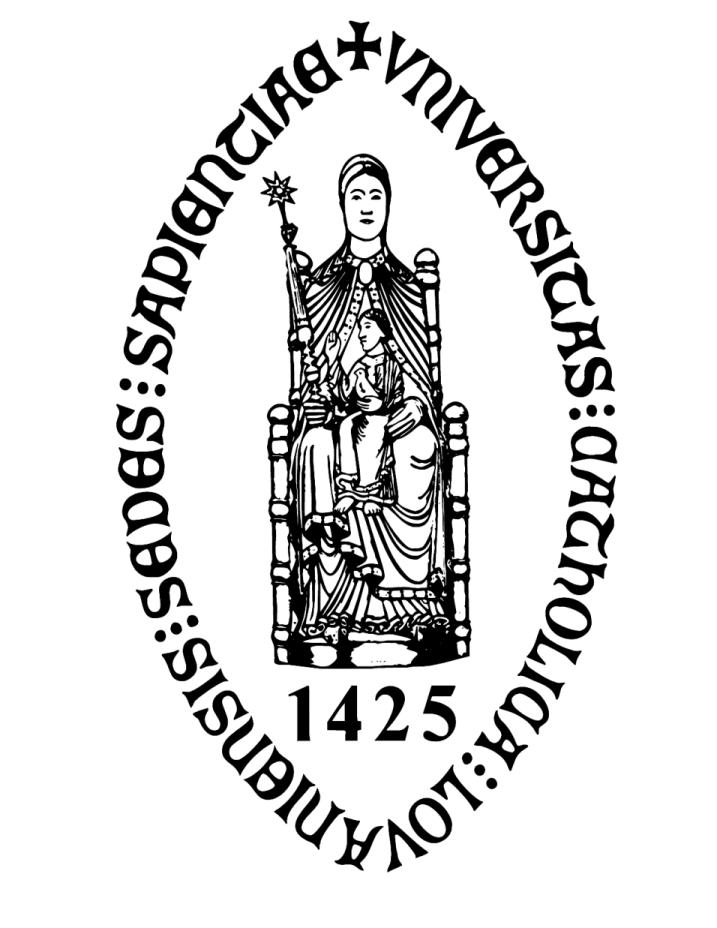

Katholieke Universiteit Leuven (KU Leuven)
Oude Markt 13 - 3000 Leuven, België
https://www.kuleuven.be
I was a research assistant in the Language Intelligence & Information Retrieval (LIIR) laboratory of the Center for IT & IP Law (CiTiP), at the KU Leuven.
Research

-
Moens, M.-F., Jeuniaux, P., Angheluta, R., & Mitra, R. (2006). Measuring aboutness of an entity in a text. In R. Mihalcea, & D. Radev (Eds.), Proceedings of HLT-NAACL 06 TextGraphs: Graph-based Algorithms for Natural Language Processing (pp. 33-40). New York: Association for Computational Linguistics. https://dl.acm.org/doi/proceedings/10.5555/1654758

-
Angheluta, R., Jeuniaux, P., Mitra, R., & Moens, M.-F. (2004). Fuzzy clustering for noun phrase coreference resolution. In G. Purnelle, C. Fairon, & A. Dister (Eds.) (pp. 60-70), Proceedings of the 7th International Conference on the Statistical Analysis of Textual Data (JADT 2004). Louvain-la-Neuve, Belgium: Presses Universitaires de Louvain. http://cental.fltr.ucl.ac.be

-
Moens, M.-F., Angheluta, R., Busser, R. D., & Jeuniaux, P. (2004). Summarizing texts at various levels of detail. In Proceedings of RIAO 2004 Coupling Approaches, Coupling Media and Coupling Language for Information Retrieval (pp. 597-609). Avignon, France: Le Centre de Hautes Études Internationales d'Informatique Documentaire. https://dl.acm.org/doi/proceedings/10.5555/2816272
-
Mitra, R., Angheluta, R., Jeuniaux, P., & Moens, M.-F. (2003). Progressive fuzzy clustering for noun phrase coreference resolution. In A. P. de Vries (Ed.), Proceedings of the 4th Dutch-Belgian Information Retrieval Workshop (DIR 2003)(pp. 19-30). Amsterdam, Netherlands. https://dl.acm.org
— 16 September 2023